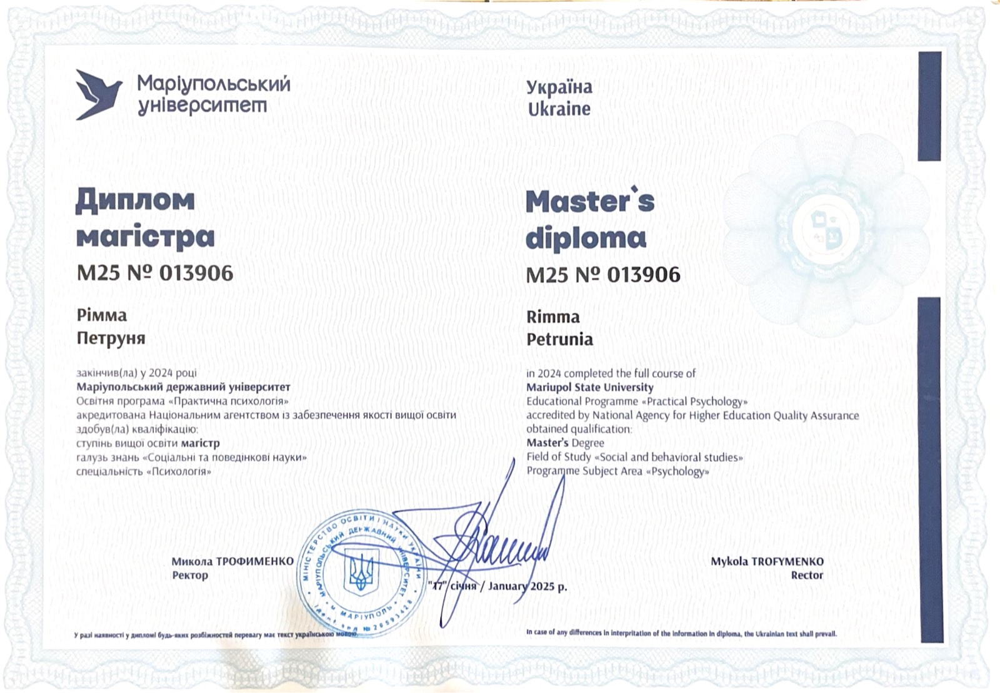
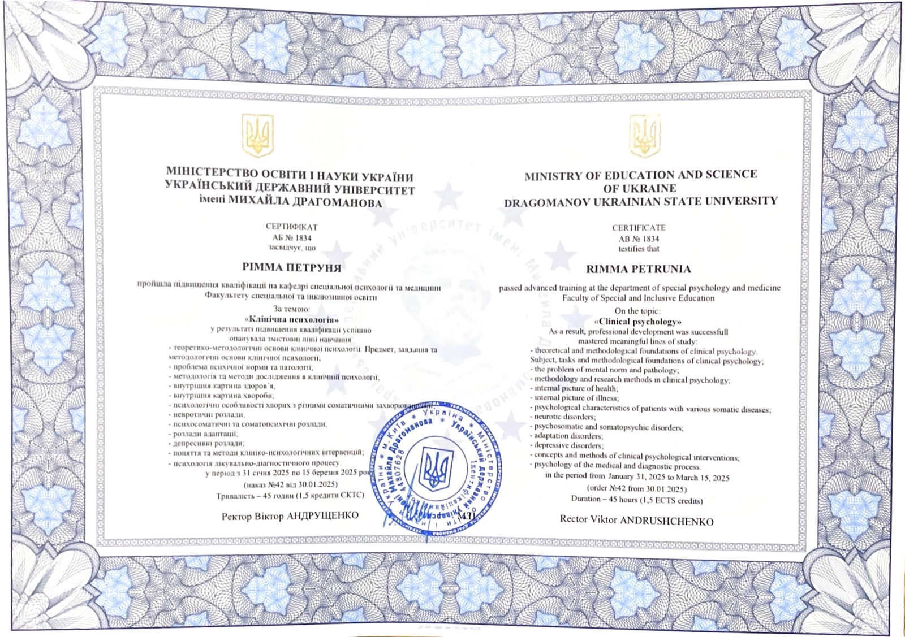
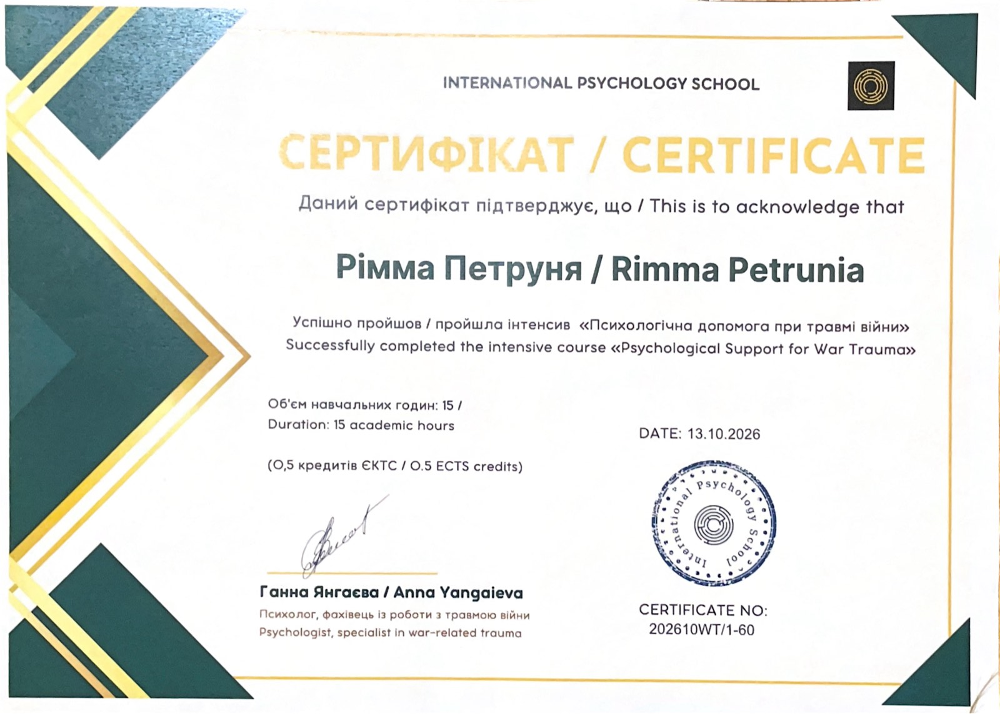
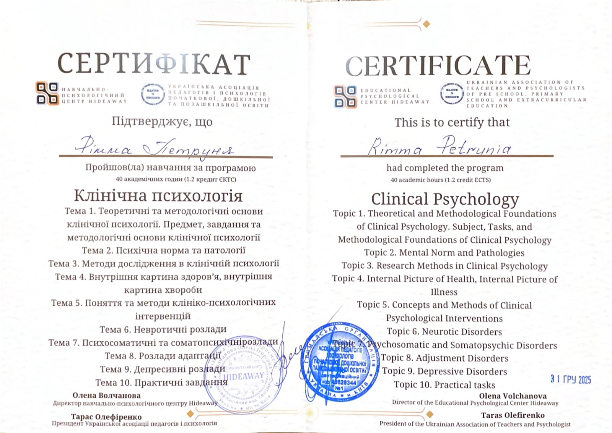

Індивідуальна консультація
Особиста зустріч онлайн, повністю присвячена вам і вашому запиту. Конфіденційно та у безпечній атмосфері.
ЗаписатисяПсихолог · Онлайн
Мене звати Рімма. Я допомагаю дорослим людям прожити складні періоди, повернути внутрішню опору й знайти сили рухатися далі — у теплій, безпечній і безоціночній атмосфері.
Психолог, яка поруч із вами
Вітаю! Я - Рімма Петруня, сертифікований клінічний психолог, магістр психології. У своїй практиці я допомагаю людям долати вигорання, тривожність, життєві кризи та шукати внутрішню опору у складні часи.
Для мене психологія — це про повернення до себе справжнього. У роботі з людьми для мене найважливіше створити безпечний, дбайливий простір, де немає місця оцінкам чи засудженню, а є повага до вашого особистого темпу, щирість та глибоке прийняття вашого досвіду.
Якщо ви впізнали себе — ви в правильному місці.
Особиста зустріч онлайн, повністю присвячена вам і вашому запиту. Конфіденційно та у безпечній атмосфері.
ЗаписатисяАнонімні онлайн-зустрічі у дружній атмосфері, які модерує дипломований психолог. Простір, де можна говорити про те, що болить.
ДокладнішеМоя кваліфікація підтверджена дипломами та сертифікатами. Натисніть, щоб переглянути.

Диплом магістра · «Практична психологія» — Маріупольський державний університет (2025)
Підвищення кваліфікації · «Клінічна психологія» — УДУ ім. М. Драгоманова, 45 год (2025)
Інтенсив · «Психологічна допомога при травмі війни» — International Psychology School (2026)
Курс · «Клінічна психологія», 40 год — центр Hideaway / Асоціація педагогів і психологів (2025)Окремі напрями та інтенсиви, які я пройшла:
Хвилинка для себе
Коли тривожно — допомагає сповільнити дихання. Слідкуйте за колом: вдихайте, коли воно росте, і видихайте, коли зменшується.
Техніка квадратного дихання: вдих 4 · затримка 4 · видих 4 · пауза 4